-
Inicios de JAVA
Java nace en 1991 con el nombre "OAK", posteriormente cambiado por Green por problemas legales, y finalmente con la denominación actual JAVA.
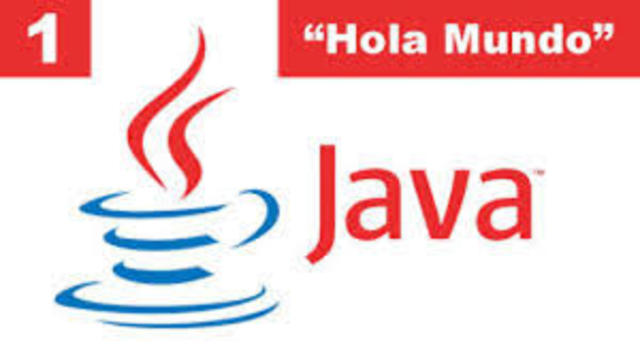 -
Proyecto Verde
En 1992 se presenta el proyecto verde, con los prototipos a bajo nivel. Entre 1993 y 1994 se trabaja para poder presentar un prototipo funcional (hotJava) donde se ve todo el potencial que JAVA puede ofrecer.
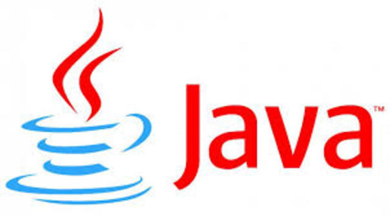 -
Versiones de Java (1.0 -1.2)
Java aparece en 1995 como un nuevo lenguaje de programación con soporte multiplataforma desarrollado por James Gosling y Sun MicroSystems.

-
Establecimiento
En 1995 finalmente, es presentada la versión alpha de java, y un año despues en 1996 es lanzado el primer JDK (JDK 1.0). El desarrollo de java a partir de entonces es imparable, se van presentando nuevos paquetes y librerías hasta la actualidad.
-
Curiosidades de JAVA
Una de las teorías más difundidas viene del cafe, se dice que una cafetería cercana donde los desarrolladores tomaban cafe se llamaba de la misma forma, de ahí vendria tambien su logo con una taza de cafe humeante. Otra versión dice que viene del acronimo: Just Another Vague Acronym ("sólo otro acrónimo ambiguo más"). Aparte de estas teorías, la versión más plausible es que se eligió su denomicación al azar de una lista de posibles nombres.
-
Versión 1.0:
Versión 1.0: La primera versión del lenguaje contiene las clases principales , la maquina virtual y el API gráfico de AWT es un lenguaje que acaba de nacer.
Versión 1.1: Aparece en 1997 e incorpora al lenguaje varias clases que faltaban como Readers /Writers ,Calendars y Bundles . Pero sin ningún lugar a duda su mayor aportación es la inclusión del estándar de JavaBeans y el API de JDBC para conexión a BD. Este último supone un salto importante en cuando a la utilización del lenguaje.
-
Versiones de Java (1.3 -1.5)
Java en estos momentos ya es una plataforma madura a la cual el fabricante va añadiendo nuevas características.
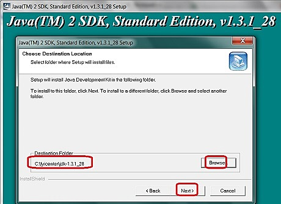 -
Versiones de Java (1.6 -1.8)
Java ha madurado mucho y es una de las plataforma de referencia.
Versión 1.6: Esta versión contiene avances muy puntuales con la inclusión de un API de compilación “on-the-fly” que permitirá gestionar servicios web de forma cómoda.
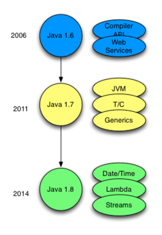 -
Java SE 7
Java 7 (nombre en clave Dolphin) es una actualización importante que se lanzó el 7 de julio de 2011 [135] y estuvo disponible para los desarrolladores el 28 de julio de 2011. [136] El período de desarrollo se organizó en trece hitos; el 6 de junio de 2011 se completó el último de los trece hitos [136] [137]. En promedio, se lanzaron 8 compilaciones (que generalmente incluían mejoras y correcciones de errores) por hito. La lista de funciones del proyecto OpenJDK 7 enumera muchos de los cambios.
-
Java SE 8 (LTS)
Java 8 fue lanzado el 18 de marzo de 2014, [221] [222] e incluyó algunas características que estaban planeadas para Java 7 pero que luego se pospusieron
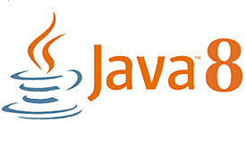 -
Java SE 9
JEP 193: Controladores de variables:define un medio estándar para invocar los equivalentes de varias operaciones
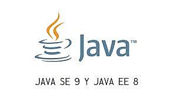 -
Java SE 10
penJDK 10 fue lanzado el 20 de marzo de 2018, con doce nuevas características confirmadas
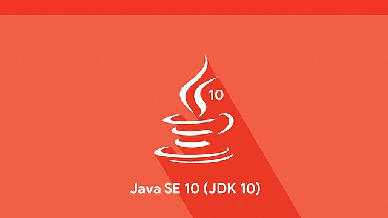 -
Java SE 12
JDK 12 se lanzó el 19 de marzo de 2019. Entre otras, Java 12 incluye una serie de características nuevas
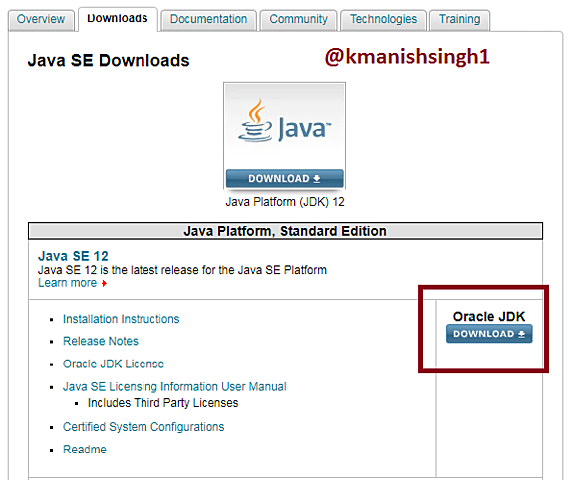 -
Java SE 13
JDK 13 se lanzó el 17 de septiembre de 2019. Java 13 incluye las siguientes características nuevas, así como "cientos de pequeñas mejoras y miles de correcciones de errores
-
Java SE 14
JDK 14 se lanzó el 17 de marzo de 2020. Java 14 incluye las siguientes características nuevas, así como "cientos de pequeñas mejoras y miles de correcciones de errores
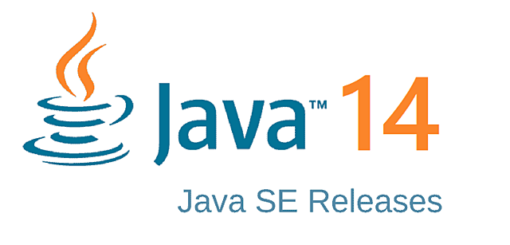 -
Java SE 15
JDK 15 se lanzó el 15 de septiembre de 2020. Java 15 agrega, por ejemplo, soporte para literales de cadena de varias líneas (también conocidos como bloques de texto). Los recolectores de basura Shenandoah y Z (este último a veces abreviado como ZGC) están ahora listos para su uso en producción (es decir, ya no están marcados como experimentales). La compatibilidad con el sistema operativo Solaris de Oracle (y las CPU SPARC) se elimina (aunque todavía está disponible en, por ejemplo, Java 11)
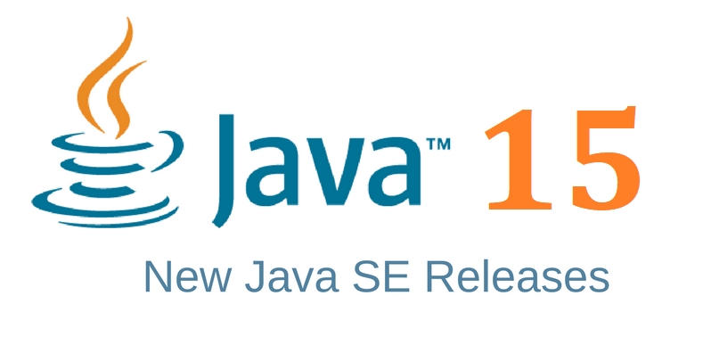 -
Java hoy en día
A día de hoy, podemos decir, que Java es uno de los lenguajes más importantes del mundo. Con una comunidad extendida en todos los componentes y más de 4 millones de desarrolladores, existen millones de dispositivos que lo usan. Ademas, tras el surgimiento de android, java se establecido como el lenguaje de programación para móviles más extendido del planeta./p>
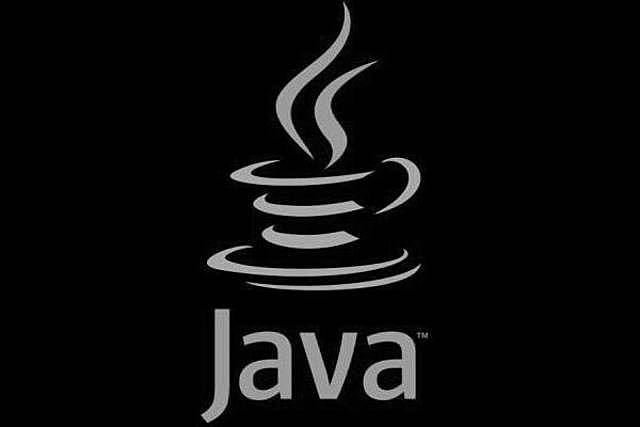